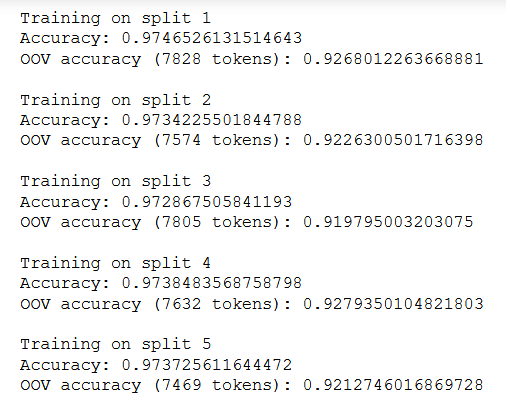
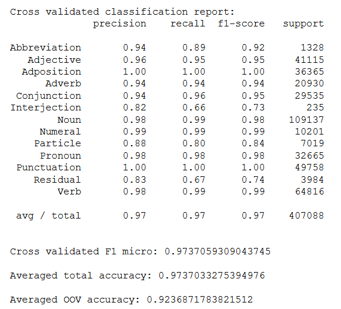
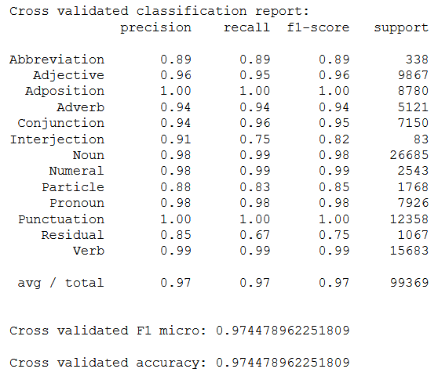
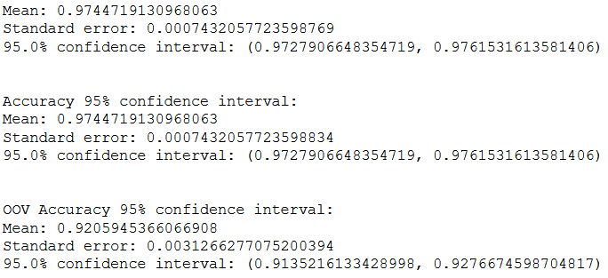

Što je croapi?
Croapi je skup online alata kojima je cilj prikazati neke od brojnih mogućnosti primjene strojnog učenja u području obrade prirodnog jezika, pri čemu je naglasak stavljen na hrvatski jezik.
Strojno učenje (engl. machine learning) je grana računarske
znanosti i umjetne inteligencije koja se bavi različitim statističkim i algoritamskim
postupcima kako bi programirala računala da uče iz podataka.
[izvor]
Za razliku od klasičnog programiranja eksplicitnim naredbama (npr. if), pomoću
strojnog učenja računala automatski pronalaze pravila koja
kasnije koriste kod zaključivanja, pri čemu je potreban skup podataka nad kojima će učiti.
Duboko
učenje
je posebna vrsta strojnog učenja koja se bavi različim vrstama (dubokih)
neuronskih
mreža.
Obrada prirodnog jezika (engl. natural language processing (NLP)) također je dio računarske znanosti koji se bavi proučavanjem interakcije između računala i prirodnog ljudskog jezika. Neki od zadataka kojima se ovo područje bavi uključuju računalno razumijevanje sintakse i semantike prirodnog jezika (značenja riječi, rečenica i tekstova), otkrivanje vrsta riječi, razvrstavanje tekstova u različite kategorije, otkrivanje imenovanih entiteta u tekstu, strojno prevođenje, pretvaranje ljudskog govora u tekst i obrnuto, odgovaranje na pitanja i mnogi drugi. Pritom se često koristi strojno učenje.
croapi beta 1
Croapi verzije beta 1 je matematički model koji strojnim učenjem određuje vrste riječi u rečenici (engl. part-of-speech tagging). Podržane vrste riječi su imenice, glagoli, pridjevi, zamjenice, brojevi, prilozi, prijedlozi, veznici, usklici i čestice, a pridodane su kratice i interpunkcijski znakovi. Riječi koje nisu uspjele biti prepoznate svrstane su u kategoriju ostalo.
Kolika je točnost modela?
Model u prosjeku točno otkriva vrste riječi u 97,45% slučajeva. Točnost modela nad riječima koje nikad nije vidio tijekom učenja trenutno iznosi 92%. U budućnosti će se model poboljšavati kako bi točnost bila veća.
Koristi li model neku vrstu rječnika?
Ne u klasičnom smislu. Model je tijekom faze treniranja "vidio" razne riječi iz ograničenog skupa tekstova u kojima su vrste riječi unaprijed označene pa u tom smislu možemo govoriti o rječniku. Međutim, broj jedinstvenih oblika riječi koje je model tijekom učenja imao na raspolaganju mnogo je manji od ukupnog broja i oblika riječi u hrvatskom standardnom jeziku. Vanjske baze označenih riječi i tvorbi nisu korištene.
Riječi nisu bile jedine ulazne značajke iz kojih je model učio. Ono što je model naučio algoritmom strojnog učenja su matematička pravila pomoću kojih pokušava predvidjeti vrstu riječi neovisno o tome nalazi li se ona u tekstovima za učenje ili ne.
Tehnički detalji
Skup podataka
Skup podataka korišten za učenje modela dostupan je na poveznici: Ljubešić, Nikola; Agić, Željko; Klubička, Filip; Batanović, Vuk and Erjavec, Tomaž, 2018, Training corpus hr500k 1.0, Slovenian language resource repository CLARIN.SI
Skup se sastoji od 24794 rečenica sa označenim vrstama riječi. Prije treniranja je nasumično promiješan i podijeljen na skup za treniranje i skup za testiranje u omjeru 80:20%.
Značajke
Uz riječi, korištene su razne ručno i poluručno kreirane značajke kao što su znakovni n-grami, prefiksi, sufiksi i druge (ukupno 24).
Model
Trenutna verzija koristi samostalno trenirani CRF model pomoću unakrsne validacije na 5 preklopa skupa za treniranje. Duboki modeli su trenutno u eksperimentalnoj fazi.
Performanse
U nastavku slijede rezultati evaluacije na 5 validacijskih preklopa skupa za treniranje i skupu za testiranje. Kratica OOV (engl. out of vocabulary) označava tokene (riječi) koji nisu bili prisutni ni u jednoj rečenici skupa za testiranje. Mjere su izračunate na razini tokena.
Skup za treniranje
Na slikama je prikazana točnost na validacijskim preklopima skupa za treniranje, precision, recall i F1 makro mjere za pojedine vrste riječi, F1 mikro mjera nad združenim validacijskim predikcijama i uprosječene točnosti nad svim i OOV tokenima iz validacijskih preklopa:
 Skup za testiranje
Skup za testiranje podijeljen je na 10 preklopa kako bi se mogli izračunati intervali pouzdanosti uz prethodnu provjeru normalnosti distribucije mjerenih rezultata. Na svakom preklopu napravljena je predikcija, a nad združenim predikcijama prikazane su precision, recall i F1 makro mjere za pojedinu vrstu riječi, F1 mikro mjera i točnost.
95%-tni intervali pouzdanosti za F1 mikro mjeru (nedostaje ispis prvog naslova u slici), točnost i točnost nad riječima izvan skupa za treniranje:
Kontakt
Za sva pitanja, prijedloge, komentare i mogućnosti korištenja prilagođenog API-ja slobodno se obratite na milan.pavlovic711@gmail.com ili na LinkedIn.